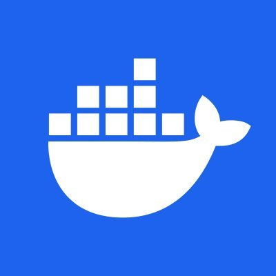

Jeu de snake en C
Technologies utilisées
- Langage bash
- Images Docker
Lien GitHub
Vers le dépôt GitHubDescription
Par groupe de 4, nous avions à dispostion un jeu de fichiers contenant des images, des fichiers textes et un tableau CSV.
Dans un premier temps, nous devions utiliser les docker containers pour formater les fichiers "à la main" selon des critères précis. Par exemple, les images devaient toutes être au format .webp et être d'une certaine taille comprise entre deux bornes.
Ensuite, nous devions écrire des scripts bash pour automatiser ces processus.
Enfin, nous avions à disposition un "tableau des médailles" avec tous les pays ayant participé aux JO 2024 et nous devions générer un pdf de ce tableau en passant par une page HTML. Les pays devaient avoir en face d'eux leur drapeau correspondant et ils devaient être triés par médailles obtenues.